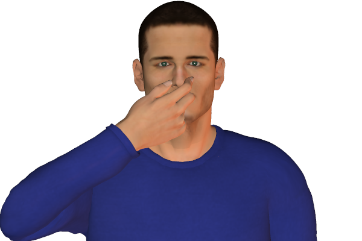

Bookmark added
-
pinching or rubbing nose, while listeningthoughtfulness, suppressing commentIn many instances this gesture could be a signal of holding oneself back from commenting or responding.
-
tight-lipped smilesecrecy or withheld feelingsA smile that appears as a straight line with the teeth hidden. The person usually has a secret he doesn’t want to reveal maybe due to distrust. Can also be a signal of rejection.
-
playing an imaginary violinmock sympathy or sadnessThe air violin is played usually if someone is mocking a person in a sad situation. Usually in a state of mocking sympathy.
-
thumb and fingers formed into a tube and rocked side to side or up and down (mainly male)offensive - mockery, dissatisfaction, expression of inferior qualityThis gesture is usually directed to a person who is being insulted. Usually used by men.
-
twisted smilemixed feelings or sarcasmDoes not show real emotions of what the person is usually feeling.
-
blinking infrequently
 variousIt is not the most revealing sign of understanding body language.It can be due to boredom if the eyes are unfocussed or can also be concentration if eyes are focussed. It can also indicate negativity.
variousIt is not the most revealing sign of understanding body language.It can be due to boredom if the eyes are unfocussed or can also be concentration if eyes are focussed. It can also indicate negativity. -
pasted smilefaked smileA fake smile generally appears quickly and does not reach the eyes. It remains fixed on the face for longer than real and mostly indicates a forced agreement.
-
dropped-jaw smilefaked smileA fake smile which which is intentional.
-
forced laughternervousness, cooperationA forceful laugh is generally a sign of nervousness or stress. It is an effort to relieve the atmosphere of tension or stress.